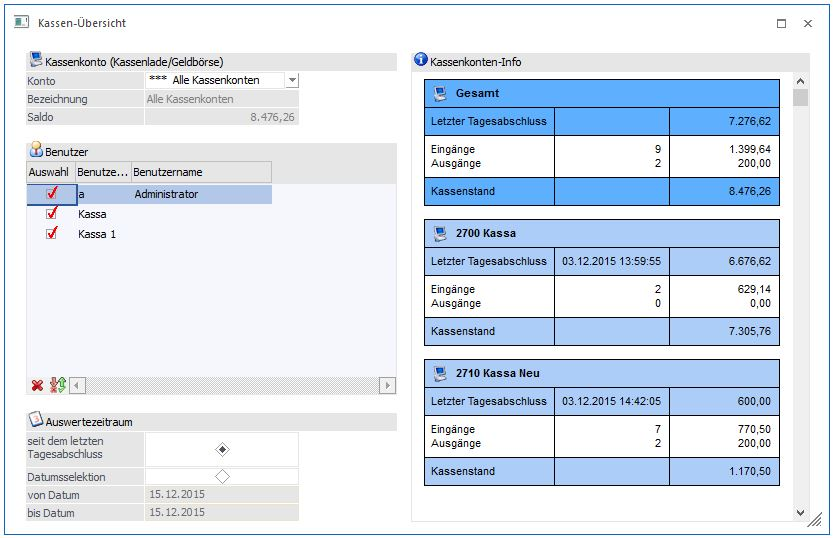
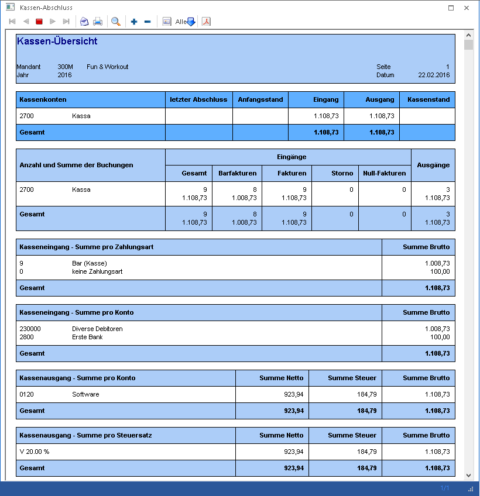

In der WinLine FAKT gibt es einen neuen Menüpunkt unter
1 Auswertungen
1 Kassen-Übersicht.

Hinweis:
Beim Öffnen des Menüpunktes wird geprüft, ob im Menüpunkt Kassenstamm bereits eine Kassenidentifikationsnummer und ein FIBU-Konto hinterlegt sind und ob der Benutzer laut Kassenstamm die Berechtigung zur Erstellung von Barfakturen auf der Eingabestation hat. Ein Admin-Benutzer kann den Menüpunkt auch ohne entsprechende Hinterlegung im Kassenstamm aufrufen.
Über die Auswahllistbox "Konto" kann das gewünschte Kassenkonto ausgewählt werden. In dieser Auswahllistbox werden alle Konten angezeigt, für die der Benutzer laut Kassenstamm die Berechtigung hat, für einen Admin werden alle im Kassenstamm verwendeten Kassenkonten angezeigt und ein zusätzlicher Eintrag "alle Kassenkonten".
Nach dem Öffnen des Fensters wird jenes Konto vorgeschlagen, das dem Benutzer und der Eingabestation laut den Einstellungen im Kassenstamm entspricht. Ist für den Benutzer sowohl für die Eingabestation, als auch für "alle Eingabestationen" ein Eintrag vorhanden, wird jener für die aktuelle Eingabestation verwendet. Wenn im gefundenen Benutzer-Eintrag kein Konto eingetragen ist, wird das Default-Konto aus dem Kassenstamm verwendet.
Hinweis:
Für Admin- Benutzer ohne Eintrag im Kassenstamm wird ebenfalls das Default-Konto verwendet.
Nach der Auswahl des Kassenkontos werden die Kontobezeichnung und der aktuelle Saldo angezeigt, für den Eintrag "alle Kassenkonten" wird der Saldo der betroffenen Konten aufsummiert und angezeigt.
Für das ausgewählte Konto wird rechts im Fenster eine Kassenkonten-Info angezeigt und beim Wechseln des Kassen-Kontos wird die Information entsprechend aktualisiert. Es werden das Datum und der Saldo des letzten Tagesabschlusses, die Anzahl und Summe von Ein- und Ausgängen seit dem letzten Tagesabschluss und der aktuelle Saldo für das Kassenkonto angezeigt.
Ist der Eintrag "alle Kassenkonten" ausgewählt wird oben eine Summe über alle Kassenkonten angezeigt und darunter die einzelnen Konten-Summen.
Hinweis:
In diesen Summen werden die Buchungen aller berechtigten Benutzer berücksichtigt, eine eventuelle Selektion hat hier keine Auswirkung.
In einer Tabelle werden alle Benutzer angezeigt, die für das gewählte Kassenkonto die Berechtigungen laut dem Menüpunkt "Kassenstamm" haben. Für "alle Kassenkonten" werden alle Benutzer angezeigt, die für zumindest eines der Kassenkonten die Berechtigung haben.
Für den Auswertezeitraum stehen folgende Optionen zur Verfügung:
Ø seit dem letzten Tagesabschluss und
Mit dieser Option wird die Übersicht vom letzten Tagesabschluss bis zum aktuellen Tagesdatum ausgegeben.
Ø Datumsselektion
Hier kann ein bestimmter Zeitraum eingetragen werden, welcher in der Ausgabe der Übersicht berücksichtigt wird.
Hinweis:
Bei der Auswahl Datumselektion werden die Felder "von" und "bis" mit dem Tagesdatum vorbelegt.
Für die Ausgabe stehen die Buttons
Ø Bildschirm-Ausgabe
Ø Drucker-Ausgabe
zur Verfügung.
Zusätzlich steht noch der Button Ausgabe Tabelle zur Verfügung. Hier werden anhand einer Tabelle alle einzelnen Buchungen angezeigt. Diese können mit verschiedenen Selektionen ausgegeben/angezeigt werden.
Beim Druck auf den Button Kassenbuch wird direkt der Menüpunkt Kassenbuch mit dem Kassenkonto, als Bildschirm-Ausgabe geöffnet.

Über den Button "Kassenbuch" wird das Kassenbuch geöffnet und mit den aktuellen Selektionen angezeigt.
Hinweis:
Für "alle Kassenkonten" ist der Button Kassenbuch nicht verfügbar.